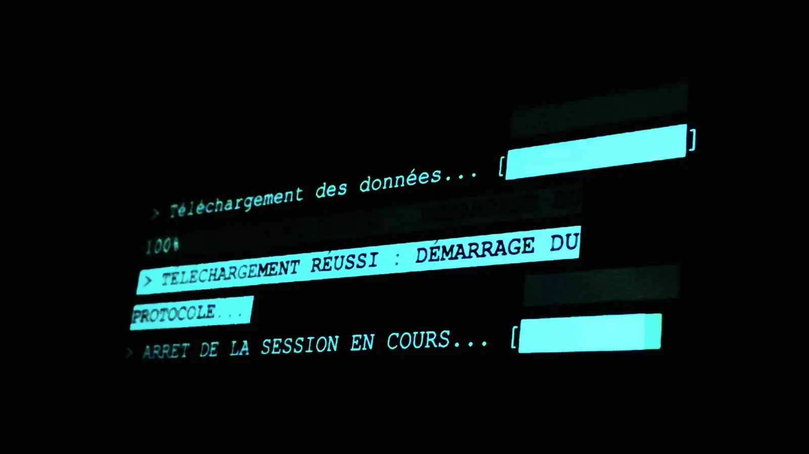
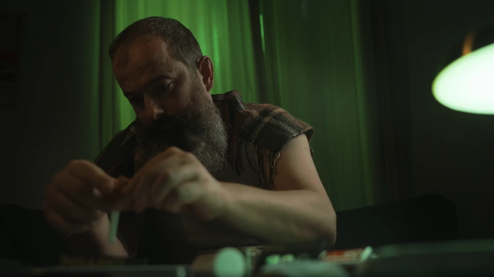
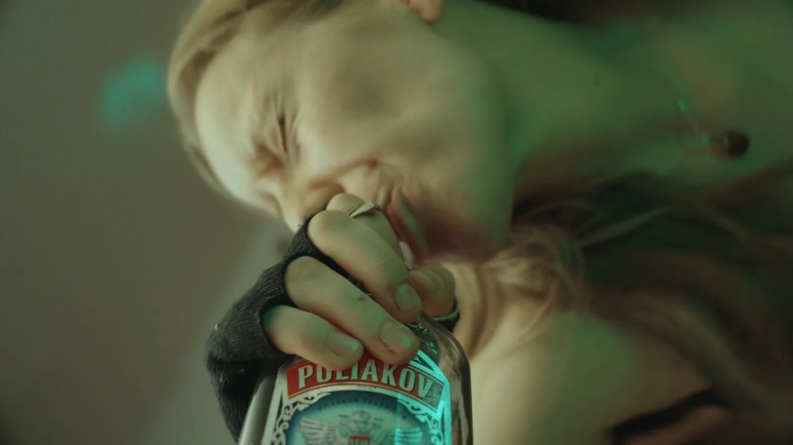
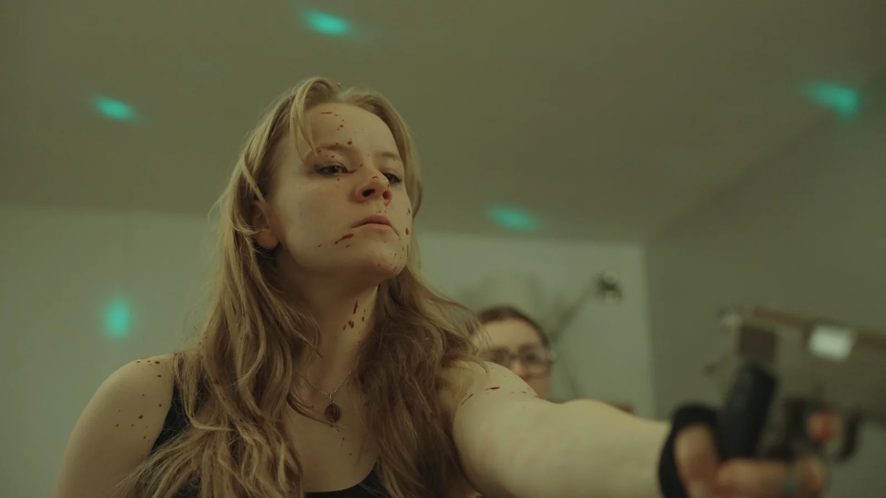
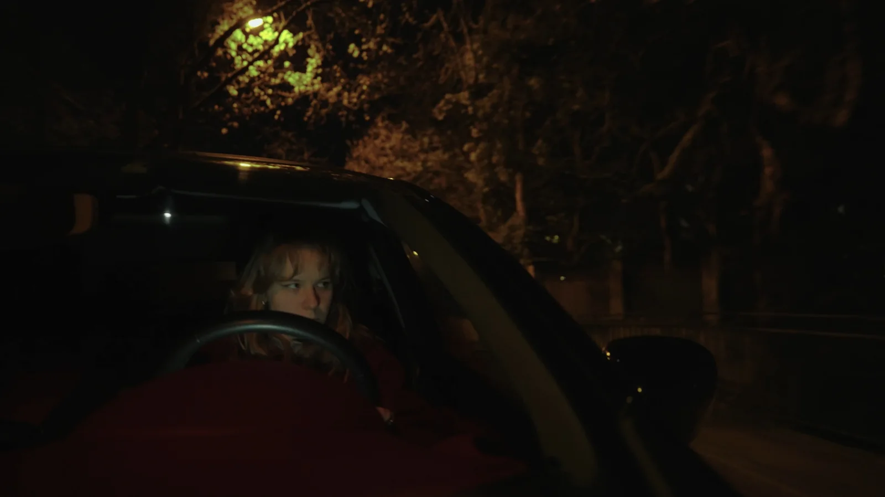
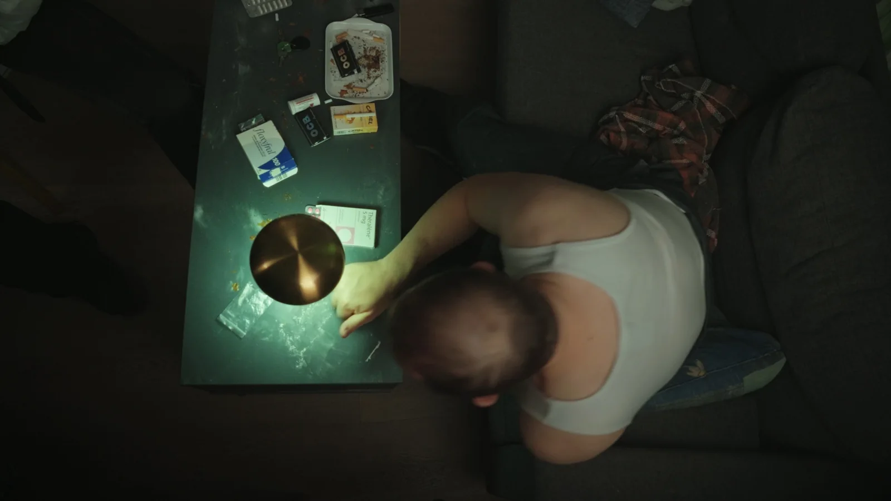

CAM 00 · ECHO REC
> Voir mes animations dans le film · 3:40
Dans un monde où une élite voit tout grâce à une puce imposée à chacun, Eli s'empare de ce pouvoir.
Une élite voit tout, sait tout, mais ne ressent rien, grâce à une puce imposée à chacun. Par un concours de circonstances, Eli s'empare de ce pouvoir.

Malgré les mises en garde de son mentor, drogué notoire et un peu fou, Eli veut sortir du système. Et se retrouve à tout voir, tout savoir.

D'abord la fascination, puis l'obsession. Ce qu'Eli voit et ressent l'entraîne dans la paranoïa, jusqu'à un crime vu par toute l'élite.


En cherchant l'aide de son mentor, Eli découvre que la personne qui comptait le plus possède elle aussi ce pouvoir. La suite se découvre dans le film.


Deux éléments d'interface conçus dans After Effects pour rendre la puce visible à l'écran : la balise qui signale un comportement surveillé, et le scanner qui confirme la connexion. J'en avais proposé une version complète ; le réalisateur a préféré une version plus épurée pour le film, que j'ai adaptée.
Assistante réalisatrice : plan de tournage et organisation du tournage.
Motion design : conception dans After Effects de la balise d'identification et de l'écran de connexion de la puce.
Court métrage réalisé à cinq, en formation IMAC.